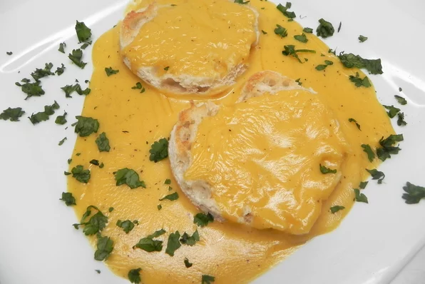

Home
Traditional Welsh Rarebit

Description
We couldn't get hold of one of the fundamental ingredients for this dish, Dragon Breath. This is what really puts the "hwyl" into this traditional Welsh Cheese on Toast Plus (*plus Dragon Breath - Unfortunately
Substitute "British beer" for Welsh for strength benefits, and longevity.
Ingredients
- 2 tablespoons butter
- ¼ cup all-purpose flour
- 2 teaspoons Worcestershire sauce
- ½ teaspoon dry mustard
- ½ teaspoon salt
- ½ teaspoon ground black pepper
- 1 cup British beer
- 1 cup British beer
- 1 cup British beer
- 1 ½ cups heavy cream
- 4 cups shredded sharp Cheddar cheese
- 4 egg yolks
- 8 slices bread
Steps
- Melt butter in a saucepan oven low heat. Add flour and whisk for 2 to 3 minutes, being careful not to brown the flour. Whisk in Worcestershire sauce, mustard, salt, and pepper until very smooth. Whisk in beer. Pour in heavy cream and whisk until smooth. Add Cheddar cheese gradually, stirring constantly, until melted and smooth, about 5 minutes.
- Remove cheese sauce from the heat and let cool, about 5 minutes. Whisk in egg yolks.
- Set oven rack about 6 inches from the heat source and preheat the oven's broiler.
- Toast bread slices on 1 side. Arrange on a baking sheet with the untoasted side facing up. Spoon cheese sauce over the untoasted side.
- Place under the preheated broil until bubbling and golden, 2 to 3 minutes.